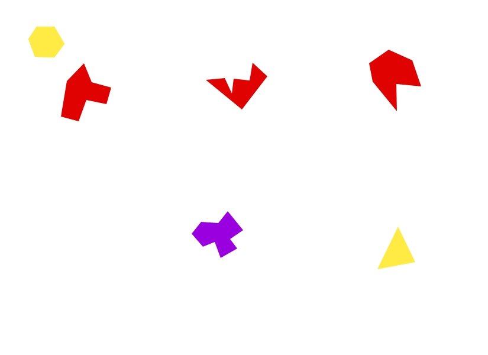

offline algorithmic thinking
To practice offline algorithmic thinking, I designed a game that would generate shapes on a piece of paper according to the results of dice rolls. Some aspects I thought could be determined by dice rolls were the shape's location, its colour and the number of sides it has. As I had a d6 (six-sided die) and d4 (four-sided die) at my disposal, I decided to divide the paper into equal sections that would help determine the location of the shape. To diversify the shapes, the number of sides was decided by a d6 + d4, with an exception where a result of (1, 1) would result in the shape being a triangle.

The playtest generated a variety of unique shapes, but their locations were rather uninteresting. If I refined this game, I would leave more things up to chance, as other aspects such as the specific shape and location were still left up to the player.
